始まりの湯エリア
ホーム > ロマサガＲＳ > ロマサガＲＳ佐賀コラボ_2021年 > 始まりの湯7/28 始まりの湯
まず始まりの湯から見ていきましょう。
対象のマップ
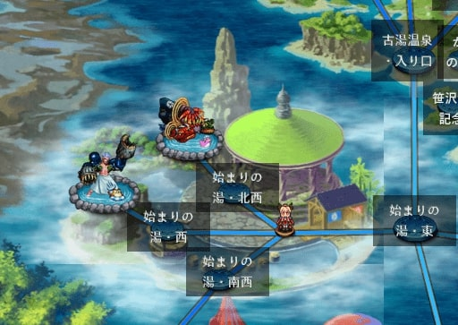
初日の対象エリアは上図の通り。サガフロ四天王の一人「シュウザー」と、サガフロ2の将魔の一人「音の将魔」がボスでした。
中央に緑色の屋根の建物がありますが、これはサガフロの主人公を選択する画面で出てくる建物です（下図でブルーが寄りかかっている建物）。
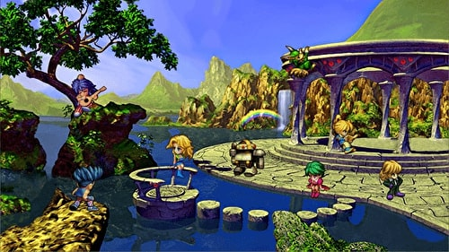
シュウザーも音の将魔も、佐賀県にまつわる技を使ってきたので、それをご紹介させていただきます。
ワラスボ（シュウザー）
シュウザーは「W・R・S・B」という技を使ってきました。
W・R・S・Bはワラスボ(WARASUBO)の子音です。佐賀市でもそう呼んでいるらしいw
参考：佐賀市 WRSB ワラスボ 公式サイト
去年はボクオーンがワラスボに担当でしたね。
「佐賀市シティプロモーション室」というyoutubeチャンネルにW・R・S・Bのプロモーションムービーが転がっていたので貼っておきますw
佐賀市プロモーションムービー 「W・R・S・B」
唐津くんち（音の将魔）
音の将魔は唐津くんちに関する技を使ってきました。
去年はロックブーケが唐津くんちを担当していましたね。
本場の唐津くんちはこんな感じらしいです。
去年記事を書いたときは動画を見て「凄い迫力！」ぐらいの感想で終わっていたのですが、そもそもこのお祭りは何のために、どんな願いを込めて開催されているのかが気になったので調べてみました。
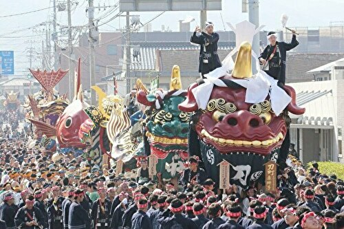
画像は唐津くんち 秋季例大祭｜唐津神社の秋祭り／唐津から抜粋
まずこの上の写真の赤い顔の獅子とか何？って思っていたんですけど、これが曳山（ひきやま）と呼ばれているものらしいですね。
元々15台の曳山が製作されてたらしいのですが、うち1台は消失し、今日奉納されているのは14台らしいです。
| No | 名前 | 画像 |
|---|---|---|
| 1 | 刀町の赤獅子 | 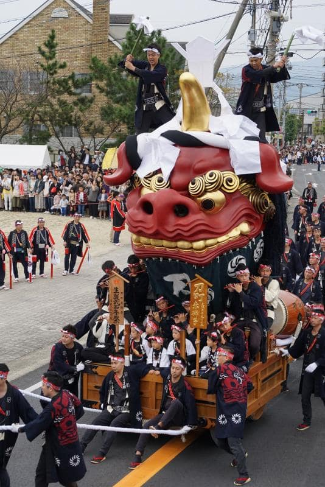 |
| 2 | 中町の青獅子 | 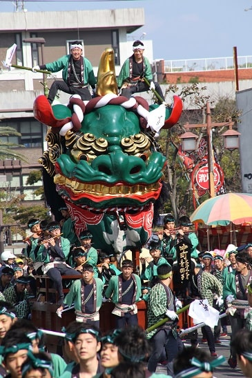 |
| 3 | 材木町の亀と浦島太郎 |  |
| 4 | 呉服町の源義経の兜 | 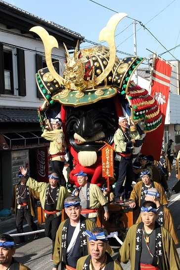 |
| 5 | 魚屋町の鯛 | 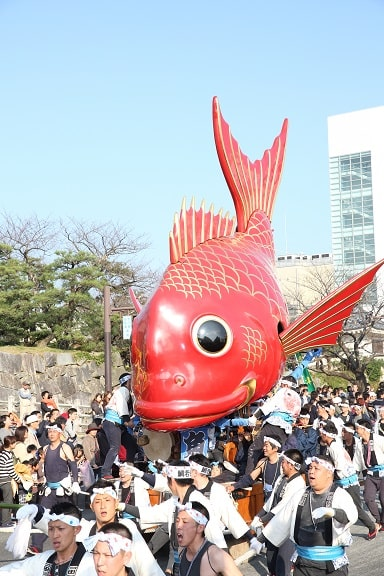 |
| 6 | 大石町の鳳凰丸 | 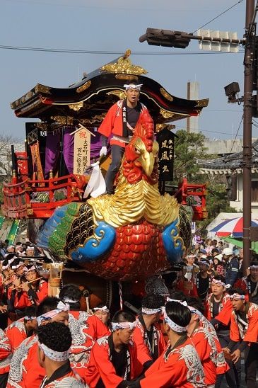 |
| 7 | 新町の飛龍 |  |
| 8 | 本町の金獅子 | 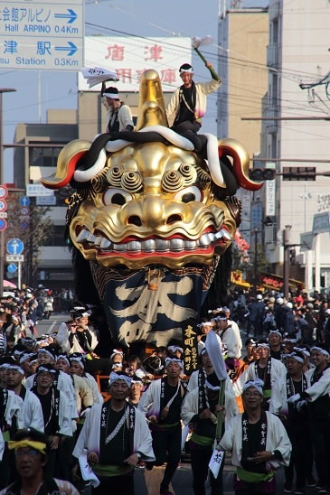 |
| 9 | 木綿町の武田信玄の兜 | 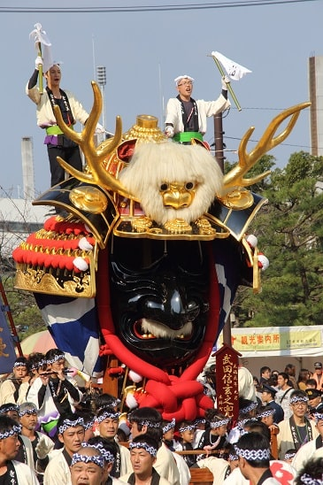 |
| 元9番 | （消失）： 紺屋町の黒獅子 | - |
| 10 | 平野町の上杉謙信の兜 | 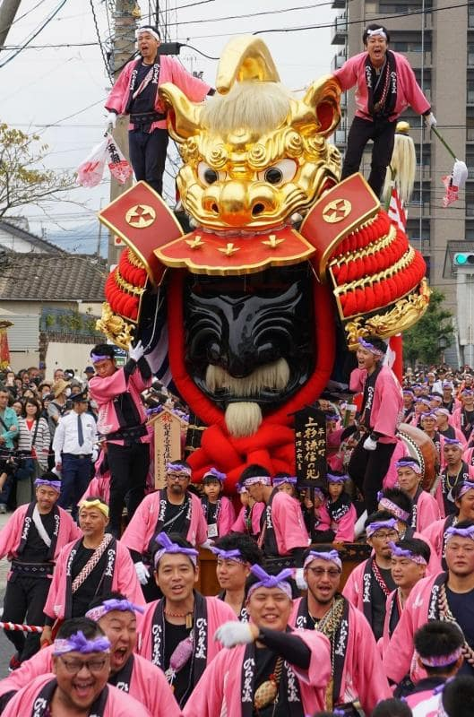 |
| 11 | 京町の珠取獅子 | 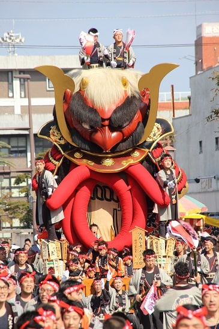 |
| 12 | 米屋町の酒呑童子と源頼光の兜 | 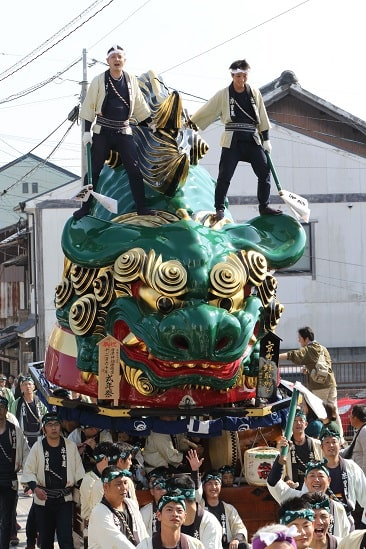 |
| 13 | 水主町の鯱 | 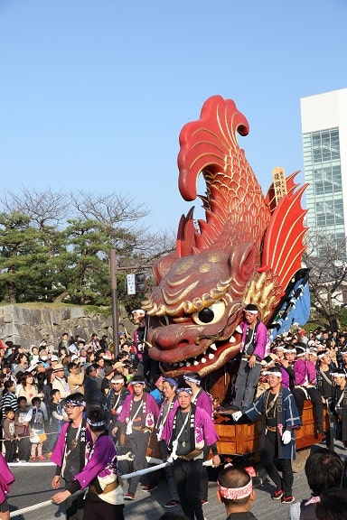 |
| 14 | 江川町の七宝丸 | 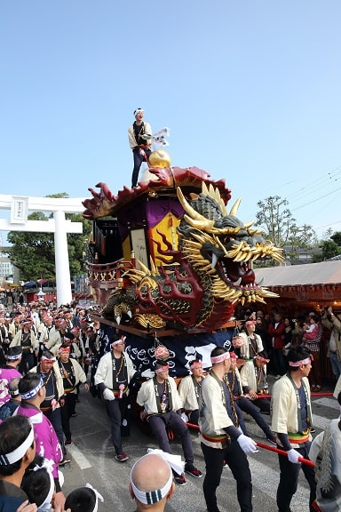 |
曳山の展示場があるみたいですね（唐津市文化事業団 施設利用案内）。
この曳山を、先の動画のように「エンヤー！」って言いながら町の中を練り歩いていくんですね。
で、何のためにこんなことをしているの・・・？
以下、たびらい 唐津くんち 秋季例大祭｜唐津神社の秋祭り／唐津より引用。
『毎年11月2日～11月4日の3日間で行われる「唐津くんち」。唐津神社の秋季例大祭であり、唐津でも最大の行事です。“くんち”は「供日」とも書き、収穫感謝の意が込められています。佐賀県の有形文化財と国の重要無形民俗文化財に指定されており、「山・鉾・屋台行事」のひとつとしてユネスコ無形文化遺産にも登録されています。』
くんち
以下、Wikipedia くんちより引用
『くんちとは、九州北部における秋祭りに対する呼称。収穫を感謝して奉納される祭である。「おくんち」と称される場合もある。
ほとんどのくんち行事に共通する要素として、神社から御旅所まで神輿による御神幸が行われることがある。またそこに大名行列や稚児行列、山車（曳山、山笠など）、囃子、踊り、獅子舞などが加わるが、何が加わるかについてはその地域ごとに大きく異なり、同じ「くんち」と一括りにできないほど多彩なものになっている。』
引用終わり
くんちの語源は諸説あるみたいですけど、『収穫した作物を神に供える日、「供日（くにち）」から転じて「くんち」になった』とする説もあるぐらいですし、収穫を感謝して神様にお供えをするお祭りだったんですねー。
参考
始まりの湯は以上です。よろしければ他のエリアも是非見てみて下さい。
- 2021年佐賀コラボトップ
- 始まりの湯エリア（今ここ）
- 古湯温泉エリア
- 嬉野温泉エリア
- 武雄温泉エリア
- その他